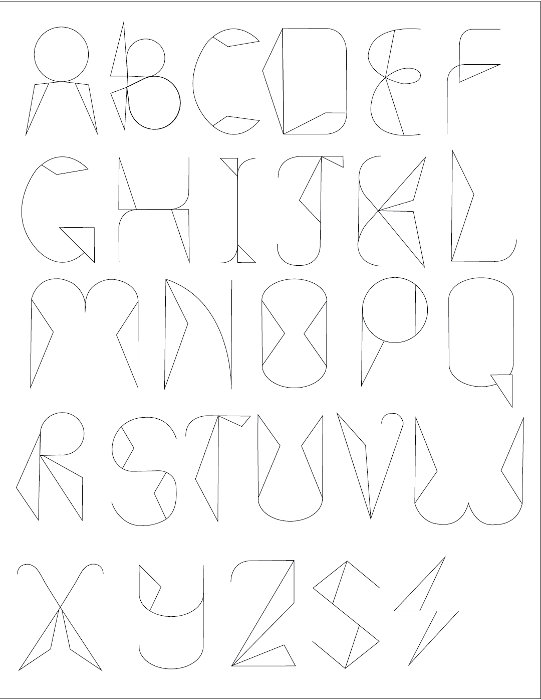

For this project, the brief was to design a font inspired by any object or element. I chose a pair of scissors as my muse and developed a unique font set that reflects its structure. The next step was to select a product that complements the font, making it feel tailor-made for the chosen item. I decided to create packaging for a chocolate-covered fruit brand.
My original font design featured a thin stroke, which, while elegant, posed some challenges in versatility. To enhance its usability, I experimented with a bolder adaptation, incorporating the original thin stroke as a central detail. This modification not only added depth but also allowed me to create patterns where the font pieces fit together seamlessly, like puzzle pieces.
The final packaging design combined typography with a dynamic play on angles, structure, and style, resulting in a visually striking product that perfectly aligns with the brand's identity.